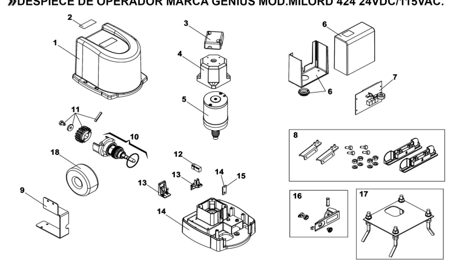

MILORD 424 — despiece original

Diagrama y códigos proporcionados por MG Portones. Los puntos pueden ajustarse desde el editor si hace falta una ubicación más precisa.
Motor corredizo de cremallera · 24 VDC / 115 VAC · Referencia interna para técnicos

Diagrama y códigos proporcionados por MG Portones. Los puntos pueden ajustarse desde el editor si hace falta una ubicación más precisa.